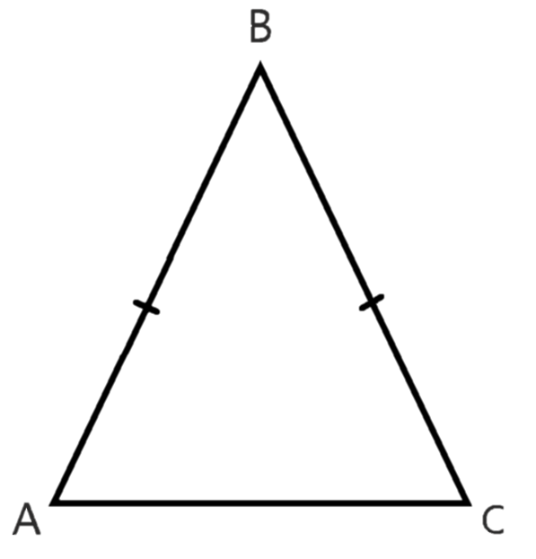

*
Равнобедренный Треугольник

# Равнобедренный треугольник — треугольник, в котором две стороны равны. Равные стороны стороны называются боковыми (AB, BC), а третья сторона — основанием(AC).
# В равнобедренном треугольнике углы при основании раны: <A = <C
# В равнобедренном треугольнике высота, проведенная к основанию, является и биссектрисой и медианой.

Признаки равнобедренного треугольника:
- Если у треугольника два угла равны, то этот треугольник - равнобедренный.
- Если две стороны треугольника равны, то этот треугольник - равнобедренный.
- Если в треугольнике биссектриса является медианой или биссектриса является высотой или высота является медианой, то этот треугольник - равнобедренный.
Теоремы о равнобедренном треугольнике:
- Треугольники, которые возникают при проведении выстоты к основанию равнобедренного треугольника, равны.
- Биссектрисы, высоты и медианы, проведенные из равных углов в равнобедренном треугольнике, равны.
-
Площадь равнобедренного треугольника:
Площадь равнобедренного треугольника равна половине произведение катетов.